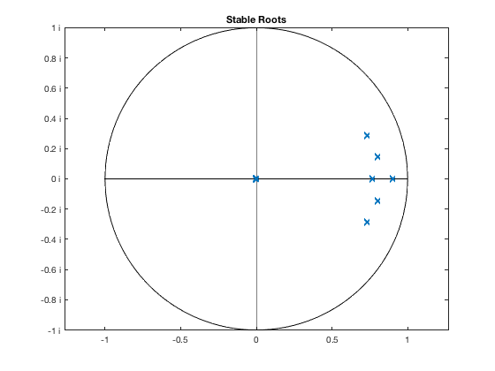

Get Information About Model Object
Use the function get (and some other functions) to access various kinds of information about the model and its properties, such as variable names, parameter values, equations, lag structure, or the model eigenvalues. Two related topics are covered in separate files: assigning/changing parameters and steady-state values in change_parameters_and_sstate, and accessing model solution matrices.
Contents
- Clear Workspace
- Load Solved Model Object
- Names of Variables, Shocks and Parameters
- Description of Variables, Shocks and Parameters
- Equations and Equation Labels
- Comments and User Data
- Different Ways to Get and Assign/Change Parameters
- Check Stationarity
- Get Currently Assigned Steady State
- Lags and Initial Conditions
- Eigenvalues (Roots)
- Plot Stable Roots Against Unit Circle
- Show Most Influential Roots
- Show Variables and Objects Created in This File
Clear Workspace
Clear workspace, close all graphics figures, clear command window, and check the IRIS version.
clear close all clc irisrequired 20180131 %#ok<*NOPTS>
Load Solved Model Object
Load the model object created in read_model.
load mat/read_model.mat m;
Names of Variables, Shocks and Parameters
disp('List of transition variables') get(m, 'XList') disp('List of measurement variables') get(m, 'YList') disp('List of shocks') get(m, 'EList') disp('List of parameters') get(m, 'PList')
List of transition variables
ans =
1x16 cell array
Columns 1 through 8
{'Y'} {'N'} {'W'} {'Q'} {'H'} {'A'} {'dA'} {'P'}
Columns 9 through 15
{'R'} {'Pk'} {'Rk'} {'Lambda'} {'dP'} {'d4P'} {'dW'}
Column 16
{'RMC'}
List of measurement variables
ans =
1x4 cell array
{'Short'} {'Infl'} {'Growth'} {'Wage'}
List of shocks
ans =
1x7 cell array
{'Mp'} {'Mw'} {'Ey'} {'Ep'} {'Ea'} {'Er'} {'Ew'}
List of parameters
ans =
1x19 cell array
Columns 1 through 6
{'alpha'} {'beta'} {'gamma'} {'delta'} {'k'} {'pi'}
Columns 7 through 13
{'eta'} {'psi'} {'chi'} {'xiw'} {'xip'} {'rhoa'} {'rhor'}
Columns 14 through 18
{'kappap'} {'kappan'} {'Short_'} {'Infl_'} {'Growth_'}
Column 19
{'Wage_'}
Description of Variables, Shocks and Parameters
disp('Database with descriptions of all variables, shocks and parameters') get(m, 'Descript') disp('List of descriptions of transition variables') get(m, 'XDescript')
Database with descriptions of all variables, shocks and parameters
ans =
struct with fields:
Short: 'Short Term Rate'
Infl: 'Price Inflation'
Growth: 'Output Growth'
Wage: 'Wage Inflation'
Y: 'Output'
N: 'Labor'
W: 'Wage rate'
Q: 'Nominal Marginal Cost'
H: 'Consumption Habit'
A: 'Productivity'
dA: 'Rate of Change in Productivity'
P: 'Final Prices'
R: 'Interest Rate'
Pk: 'Price of Capital'
Rk: 'Rental Price of Capital'
Lambda: 'Households Shadow Value of Wealth'
dP: 'Inflation Q/Q'
d4P: 'Inflation Y/Y'
dW: 'Wage Inflation Q/Q'
RMC: 'Real Marginal Cost'
Mp: 'Measurement Error on Price Inflation'
Mw: 'Measurement Error on Wage Inflation'
Ey: 'Consumption Demand Shock'
Ep: 'Cost Push Shock'
Ea: 'Productivity Shock'
Er: 'Policy Shock'
Ew: 'Wage Shock'
alpha: 'Long Run Growth'
beta: 'Discount'
gamma: 'Labor Share'
delta: 'Depreciation'
k: ''
pi: ''
eta: ''
psi: ''
chi: 'Habit'
xiw: 'Wage Stickiness'
xip: 'Price Stickiness'
rhoa: ''
rhor: ''
kappap: ''
kappan: ''
Short_: ''
Infl_: ''
Growth_: ''
Wage_: ''
ttrend: 'Time trend'
List of descriptions of transition variables
ans =
1x16 cell array
Columns 1 through 4
{'Output'} {'Labor'} {'Wage rate'} {'Nominal Margin...'}
Columns 5 through 7
{'Consumption Habit'} {'Productivity'} {'Rate of Change...'}
Columns 8 through 10
{'Final Prices'} {'Interest Rate'} {'Price of Capital'}
Columns 11 through 13
{'Rental Price o...'} {'Households Sha...'} {'Inflation Q/Q'}
Columns 14 through 16
{'Inflation Y/Y'} {'Wage Inflation...'} {'Real Marginal ...'}
Equations and Equation Labels
disp('Transition equations') get(m, 'XEqtns') disp('Measurement equations') get(m, 'yEqtn') disp('Transition equation labels') get(m, 'XLabels') disp('Find equation labeled ''Production function''') findeqtn(m, 'Production function') disp('Equations whose labels start with P') findeqtn(m, rexp('P.*'))
Transition equations
ans =
16x1 cell array
{'P*Lambda=#(1-chi)/(Y-chi*H)!!P*Y*Lambda=1;' }
{'Lambda=beta*R*Lambda{1}!!beta*R=alpha*pi;' }
{'H=exp(Ey)*alpha*Y{-1}!!H=Y;' }
{'xiw/(eta-1)*(dW/dW{-1}-1)=beta*xiw/(eta-1)*(dW{1}/dW-1+Ew)+(eta/(eta-1)*N^psi/(Lambda*W)-1)!!eta/(eta-1)*N^psi=Lambda*W;'}
{'Lambda*Pk=beta*Lambda{1}*(Rk{1}+(1-delta)*Pk{1});' }
{'Y=A*(N-(1-gamma)*&N)^gamma*k^(1-gamma);' }
{'gamma*Q*Y=#W*(N-(1-gamma)*&N);' }
{'(1-gamma)*Q*Y=Rk*k;' }
{'xip/(eta-1)*(dP/dP{-1}-1)=beta*xip/(eta-1)*(dP{1}/dP-1+Ep)+(eta/(eta-1)*RMC-1)!!eta/(eta-1)*Q=P;' }
{'RMC=Q/P!!RMC=(eta-1)/eta;' }
{'log(dA)=rhoa*log(dA{-1})+(1-rhoa)*log(alpha)+Ea;' }
{'dA=A/A{-1};' }
{'log(R)=rhor*log(R{-1})+(1-rhor)*(log(&R)+kappap*(log(dP{4})-log(pi))+kappan*(N/&N-1))+Er!!d4P=pi^4;' }
{'dP=P/P{-1};' }
{'d4P=P/P{-4};' }
{'dW=W/W{-1};' }
Measurement equations
ans =
4x1 cell array
{'Short=100*(R^4-1);' }
{'Infl=100*((P/P{-1})^4-1+Mp);'}
{'Wage=100*((W/W{-1})^4-1+Mw);'}
{'Growth=100*((Y/Y{-1})^4-1);' }
Transition equation labels
ans =
16x1 cell array
{0x0 char }
{0x0 char }
{0x0 char }
{'Wage Phillips Curve' }
{0x0 char }
{'Production Function' }
{0x0 char }
{0x0 char }
{'Price Phillips Curve'}
{0x0 char }
{0x0 char }
{0x0 char }
{0x0 char }
{0x0 char }
{0x0 char }
{0x0 char }
Find equation labeled 'Production function'
ans =
[]
Equations whose labels start with P
ans =
3x1 cell array
{'xiw/(eta-1)*(dW/dW{-1}-1)=beta*xiw/(eta-1)*(dW{1}/dW-1+Ew)+(eta/(eta-1)*N^psi/(Lambda*W)-1)!!eta/(eta-1)*N^psi=Lambda*W;'}
{'Y=A*(N-(1-gamma)*&N)^gamma*k^(1-gamma);' }
{'xip/(eta-1)*(dP/dP{-1}-1)=beta*xip/(eta-1)*(dP{1}/dP-1+Ep)+(eta/(eta-1)*RMC-1)!!eta/(eta-1)*Q=P;' }
Comments and User Data
Assign a text comment or any kind of user data to a model object using the functions comment( ) and userdata( ), respectively. The same functions are also used to get the current comment or the user data.
c = comment(m) m = comment(m, 'New comment'); comment(m) m = comment(m,c); x = struct(); x.ToDo = 'Fix this and that'; x.SomeRandNumbers = rand(1,10); m = userdata(m,x) userdata(m)
c =
'Simple SPBC Model File'
ans =
'New comment'
m =
nonlinear model object: [1 parameter variant(s)]
number of equations: [4 16 4 0 0]
solution(s) available: [1 parameter variant(s)]
comment: 'Simple SPBC Model File'
user data:
ToDo: 'Fix this and that'
SomeRandNumbers: [1x10 double]
export file(s): [0]
ans =
struct with fields:
ToDo: 'Fix this and that'
SomeRandNumbers: [1x10 double]
Different Ways to Get and Assign/Change Parameters
There are multiple equivalent ways how to view and assign parameters. Display the parameter gamma, and change the values for two std deviations, std_ep and std_ew.
P = get(m, 'parameters'); P.gamma m.gamma S = struct( ); S.std_Ey = 0.02; S.std_Ep = 0.02; m = assign(m, S); m = assign(m, 'std_Ey', 0.02, 'std_Ep', 0.02); m.std_Ey = 0.02; m.std_Ep = 0.02;
ans =
0.6000
ans =
0.6000
Check Stationarity
The logical value true is displayed as 1, the logical value false is displayed as 0.
disp('Is the model stationary?') isstationary(m) disp('Is the variable stationary?') get(m, 'IsStationary') disp('List of stationary variables') get(m, 'StationaryList') disp('List of non-stationary variables') get(m, 'NonstationaryList')
Is the model stationary?
ans =
logical
0
Is the variable stationary?
ans =
struct with fields:
Short: 1
Infl: 1
Growth: 1
Wage: 1
N: 1
Q: 0
H: 0
Pk: 0
Rk: 0
Lambda: 0
d4P: 1
RMC: 1
Y: 0
W: 0
A: 0
dA: 1
P: 0
R: 1
dP: 1
dW: 1
List of stationary variables
ans =
1x11 cell array
Columns 1 through 6
{'Short'} {'Infl'} {'Growth'} {'Wage'} {'N'} {'d4P'}
Columns 7 through 11
{'RMC'} {'dA'} {'R'} {'dP'} {'dW'}
List of non-stationary variables
ans =
1x9 cell array
Columns 1 through 8
{'Q'} {'H'} {'Pk'} {'Rk'} {'Lambda'} {'Y'} {'W'} {'A'}
Column 9
{'P'}
Get Currently Assigned Steady State
Steady state is described by complex numbers:
- real part = steady-state levels
- imaginary part = steady-state growth
The interpretation of the steady-state growth rates differs for linearised versus log-linearised variables: * linearised variables: x(t) - x(t-1) * log-linearised variables: x(t) / x(t-1)
disp('Steady-state levels and growth rates') get(m, 'Steady') disp('Steady-state levels') get(m, 'SteadyLevel') disp('Steady-state growth rates') get(m, 'SteadyGrowth') disp('Is the variable a log-variable?') get(m, 'IsLog') disp('List of log-variables') get(m, 'LogList')
Steady-state levels and growth rates
ans =
struct with fields:
Short: 7.1827
Infl: 2.5000
Growth: 3.0000
Wage: 5.5750
Y: 1.5519 + 1.0074i
N: 0.7470 + 1.0000i
W: 1.7314 + 1.0137i
Q: 0.8333 + 1.0062i
H: 1.5519 + 1.0074i
A: 1.0000 + 1.0074i
dA: 1.0074 + 1.0000i
P: 1.0000 + 1.0062i
R: 1.0175 + 1.0000i
Pk: 1.5312 + 1.0137i
Rk: 0.0517 + 1.0137i
Lambda: 0.6444 + 0.9865i
dP: 1.0062 + 1.0000i
d4P: 1.0250 + 1.0000i
dW: 1.0137 + 1.0000i
RMC: 0.8333 + 1.0000i
Mp: 0
Mw: 0
Ey: 0
Ep: 0
Ea: 0
Er: 0
Ew: 0
alpha: 1.0074
beta: 0.9962
gamma: 0.6000
delta: 0.0300
k: 10
pi: 1.0062
eta: 6
psi: 0.2500
chi: 0.8500
xiw: 60
xip: 300
rhoa: 0.9000
rhor: 0.8500
kappap: 3.5000
kappan: 0
Short_: 0
Infl_: 0
Growth_: 0
Wage_: 0
ttrend: 0.0000 + 1.0000i
std_Mp: 0
std_Mw: 0
std_Ey: 0.0200
std_Ep: 0.0200
std_Ea: 1.0000e-03
std_Er: 0.0100
std_Ew: 0.0100
Steady-state levels
ans =
struct with fields:
Short: 7.1827
Infl: 2.5000
Growth: 3.0000
Wage: 5.5750
Y: 1.5519
N: 0.7470
W: 1.7314
Q: 0.8333
H: 1.5519
A: 1
dA: 1.0074
P: 1
R: 1.0175
Pk: 1.5312
Rk: 0.0517
Lambda: 0.6444
dP: 1.0062
d4P: 1.0250
dW: 1.0137
RMC: 0.8333
Mp: 0
Mw: 0
Ey: 0
Ep: 0
Ea: 0
Er: 0
Ew: 0
alpha: 1.0074
beta: 0.9962
gamma: 0.6000
delta: 0.0300
k: 10
pi: 1.0062
eta: 6
psi: 0.2500
chi: 0.8500
xiw: 60
xip: 300
rhoa: 0.9000
rhor: 0.8500
kappap: 3.5000
kappan: 0
Short_: 0
Infl_: 0
Growth_: 0
Wage_: 0
ttrend: 0
std_Mp: 0
std_Mw: 0
std_Ey: 0.0200
std_Ep: 0.0200
std_Ea: 1.0000e-03
std_Er: 0.0100
std_Ew: 0.0100
Steady-state growth rates
ans =
struct with fields:
Short: 0
Infl: 0
Growth: 0
Wage: 0
Y: 1.0074
N: 1
W: 1.0137
Q: 1.0062
H: 1.0074
A: 1.0074
dA: 1
P: 1.0062
R: 1
Pk: 1.0137
Rk: 1.0137
Lambda: 0.9865
dP: 1
d4P: 1
dW: 1
RMC: 1
Mp: 0
Mw: 0
Ey: 0
Ep: 0
Ea: 0
Er: 0
Ew: 0
alpha: 1.0074
beta: 0.9962
gamma: 0.6000
delta: 0.0300
k: 10
pi: 1.0062
eta: 6
psi: 0.2500
chi: 0.8500
xiw: 60
xip: 300
rhoa: 0.9000
rhor: 0.8500
kappap: 3.5000
kappan: 0
Short_: 0
Infl_: 0
Growth_: 0
Wage_: 0
ttrend: 1
std_Mp: 0
std_Mw: 0
std_Ey: 0.0200
std_Ep: 0.0200
std_Ea: 1.0000e-03
std_Er: 0.0100
std_Ew: 0.0100
Is the variable a log-variable?
ans =
struct with fields:
Short: 0
Infl: 0
Growth: 0
Wage: 0
Y: 1
N: 1
W: 1
Q: 1
H: 1
A: 1
dA: 1
P: 1
R: 1
Pk: 1
Rk: 1
Lambda: 1
dP: 1
d4P: 1
dW: 1
RMC: 1
Mp: 0
Mw: 0
Ey: 0
Ep: 0
Ea: 0
Er: 0
Ew: 0
ttrend: 0
List of log-variables
ans =
1x16 cell array
Columns 1 through 8
{'Y'} {'N'} {'W'} {'Q'} {'H'} {'A'} {'dA'} {'P'}
Columns 9 through 15
{'R'} {'Pk'} {'Rk'} {'Lambda'} {'dP'} {'d4P'} {'dW'}
Column 16
{'RMC'}
Lags and Initial Conditions
disp('Maximum lag in the model') get(m, 'MaxLag') disp('List of initial conditions needed for simulations and forecasts') get(m, 'Required')
Maximum lag in the model
ans =
-4
List of initial conditions needed for simulations and forecasts
ans =
1x11 cell array
Columns 1 through 4
{'log_Y{-1}'} {'log_W{-1}'} {'log_A{-1}'} {'log_dA{-1}'}
Columns 5 through 8
{'log_P{-1}'} {'log_R{-1}'} {'log_dP{-1}'} {'log_dW{-1}'}
Columns 9 through 11
{'log_P{-2}'} {'log_P{-3}'} {'log_P{-4}'}
Eigenvalues (Roots)
Get stable, unit, or unstable eigenvalues (roots). Plot the stable roots in a unit circle. Display the dominant (largest) stable root, and the dominant (smallest) unstable root.
format short e disp('Model Eigenvalues (Roots)'); allRoots = get(m, 'Roots'); table(allRoots.', abs(allRoots).', ... 'VariableNames', {'All_Roots', 'Magnitudes'}); stableRoots = get(m, 'StableRoots'); unitRoots = get(m, 'UnitRoots'); unstableRoots = get(m, 'UnstableRoots'); % Stable roots table(stableRoots.', abs(stableRoots).', ... 'VariableNames', {'Stable_Roots', 'Magnitudes'}) % Unit roots table(unitRoots.', abs(unitRoots).', ... 'VariableNames', {'Unit_Roots', 'Magnitudes'}) % Unstable roots table(unstableRoots.', abs(unstableRoots).', ... 'VariableNames', {'Unstable_Roots', 'Magnitudes'}) format
Model Eigenvalues (Roots)
ans =
11x2 table
Stable_Roots Magnitudes
_______________________ __________
-2.9879e-19+0.0000e+00i 2.9879e-19
2.3820e-17+0.0000e+00i 2.3820e-17
7.3579e-01+2.8346e-01i 7.8851e-01
7.3579e-01-2.8346e-01i 7.8851e-01
7.6951e-01+0.0000e+00i 7.6951e-01
8.0212e-01+1.4862e-01i 8.1577e-01
8.0212e-01-1.4862e-01i 8.1577e-01
1.0684e-17+0.0000e+00i 1.0684e-17
-1.4575e-18+0.0000e+00i 1.4575e-18
-4.2395e-18+0.0000e+00i 4.2395e-18
9.0000e-01+0.0000e+00i 9.0000e-01
ans =
2x2 table
Unit_Roots Magnitudes
__________ __________
1.0000e+00 1.0000e+00
1.0000e+00 1.0000e+00
ans =
13x2 table
Unstable_Roots Magnitudes
_______________________ __________
1.0348e+00+0.0000e+00i 1.0348e+00
2.5911e+16+0.0000e+00i 2.5911e+16
-3.0096e+16+0.0000e+00i 3.0096e+16
-1.8151e+16+0.0000e+00i 1.8151e+16
-1.9247e+00+3.3797e+01i 3.3851e+01
-1.9247e+00-3.3797e+01i 3.3851e+01
1.0980e+00+2.8748e-01i 1.1350e+00
1.0980e+00-2.8748e-01i 1.1350e+00
1.7634e+00+0.0000e+00i 1.7634e+00
2.7216e+12+0.0000e+00i 2.7216e+12
2.8531e+16+0.0000e+00i 2.8531e+16
-5.7492e+15+0.0000e+00i 5.7492e+15
1.4062e+16+0.0000e+00i 1.4062e+16
Plot Stable Roots Against Unit Circle
figure( ) ploteig(stableRoots); title('Stable Roots'); [~, pos] = sort(abs(stableRoots), 'descend'); stableRoots = stableRoots(pos); [~, pos] = sort(abs(unstableRoots), 'ascend'); unstableRoots = unstableRoots(pos);
Show Most Influential Roots
Show the roots that are the most influential for the model dynamics: the largest stable root and the smallest unstable root (print its inverse).
disp('Largest stable root') stableRoots(1) disp('Smallest unstable root and its inverse') [unstableRoots(1), 1./unstableRoots(1)]
Largest stable root
ans =
0.9000
Smallest unstable root and its inverse
ans =
1.0348 0.9663
Show Variables and Objects Created in This File
whos
Name Size Bytes Class Attributes P 1x1 4784 struct S 1x1 368 struct allRoots 1x26 416 double complex ans 1x2 16 double c 1x22 44 char m 1x1 91398 model pos 1x13 104 double stableRoots 1x11 176 double complex unitRoots 1x2 16 double unstableRoots 1x13 208 double complex x 1x1 466 struct